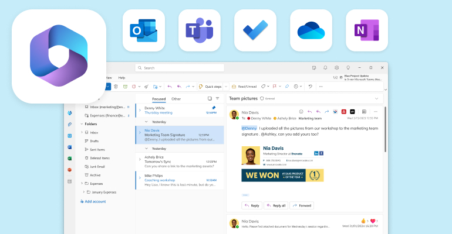
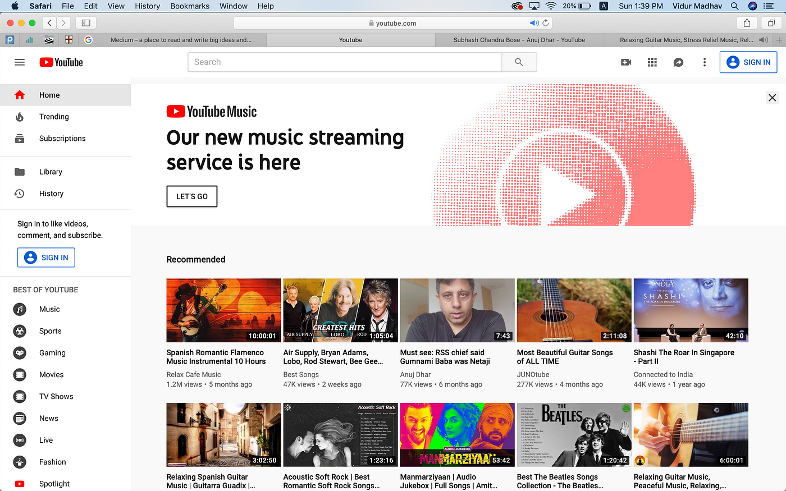
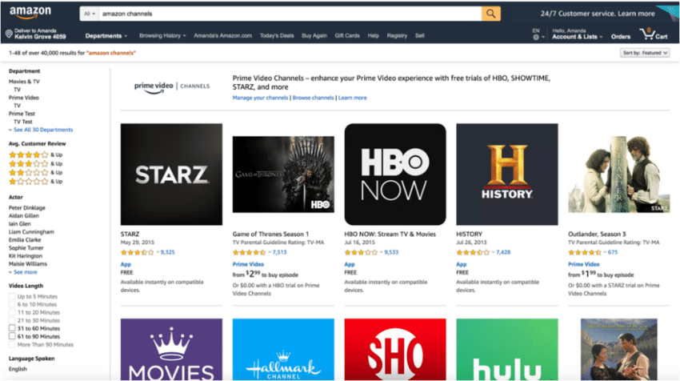

En el desarrollo web existen muchas técnicas y conceptos para la optimización de los sitios pero al final del día lo más importante es que los usuarios lo puedan utilizar de una manera sencilla. Todos hemos tenido alguna experiencia frustrante al utilizar algo que no funciona o que tenga una navegación compleja, justamente esto es lo que intenta evitar la técnica del diseño web centrado en el usuario.
El diseño centrado en el usuario consigue captar la atención de los visitantes y retener su interés, brindando un sitio intuitivo y amigable al usuario puede beneficiar en la reducción de periodos de adaptación y capacitación.
Según Iberdrola (n.d.) el proceso del diseño web centrado en el usuario contempla las siguientes fases:
Es importante especificar el contexto de uso, por ejemplo los usuarios que lo estarán accediendo así se puede dar una cierta personalización.
Es importante detallar los requisitos del sitio, así se puede ver cuál es la forma más factible para plantear los procesos que el usuario llevará a cabo en la web.
En base a lo aprendido en las etapas previas se puede empezar a diseñar prototipos con las diferentes ideas que surgen para cumplir con los requerimientos.
Es importante recopilar la retroalimentación de los usuarios finales así se puede evaluar el software y corregir de ser necesario.
Al lanzar el producto es importante proceder con un monitoreo para así verificar que el impacto sea el deseado, además del rendimiento del sitio web.
Microsoft: con el paso del tiempo ha mejorado la interfaz de usuario para así poder controlar toda la suite desde una sola páginas web, además, al tener un formato recurrente el usuario tiene una mayor facilidad para conocer al paso a paso de como funcionan los aplicativos web.
YouTube: en sus inicios YouTube tenía una interfaz un poco anticuada y limitada, con el avance del tiempo permitió la calidad de los videos lo que favorece a una mejor experiencia, además se enfocaron mucho en la usabilidad, interfaz y en el motor de búsqueda.
Amazon: la empresa ha priorizado la experiencia del usuario al intentar mejorar la interfaz y ofrecer recomendaciones con respecto a los perfiles de los visitantes, esto permite una personalización de la web y ahorra el tiempo de las personas lo que incrementa la satisfacción.
